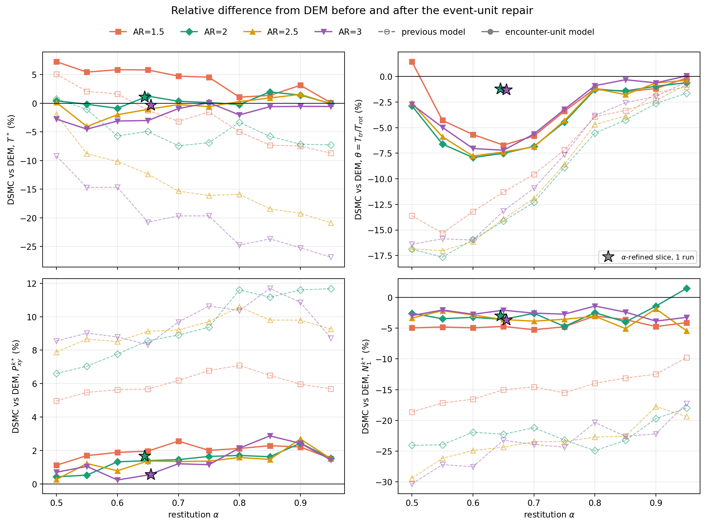
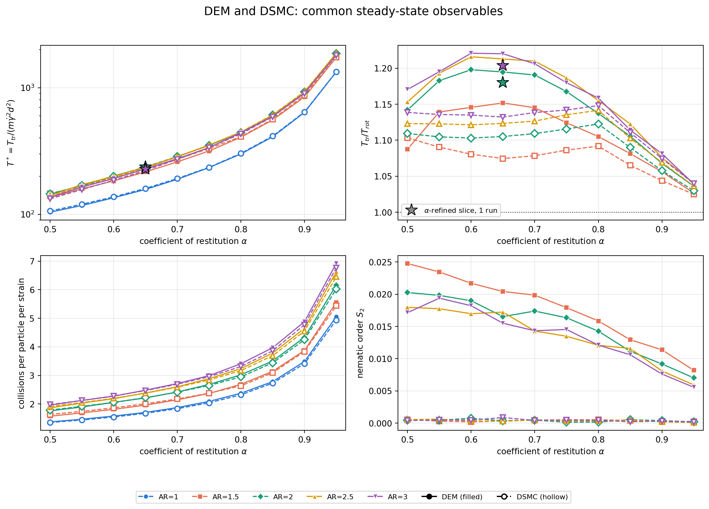

<title>DSMC Event-Unit Repair</title>
<link rel="preconnect" href="https://fonts.googleapis.com">
<link rel="stylesheet" href="https://fonts.googleapis.com/css2?family=Source+Serif+4:ital,opsz,wght@0,8..60,400;0,8..60,600;1,8..60,400&family=IBM+Plex+Sans:wght@500;600&family=IBM+Plex+Mono:wght@400&display=swap">
<style>
/* Layout: a single monograph column (~68ch) with numbered sections, full-width tables and figure plates. */
:root {
  --paper: #fafaf8;
  --ink: #1c2227;
  --muted: #5a646d;
  --rule: #d8dcdf;
  --accent: #245a86;
  --plate: #ffffff;
  --legacy: #a63d3a;
  --fixed: #2c7550;
  --shade: #eef1f3;
  --serif: "Source Serif 4", Georgia, "Times New Roman", serif;
  --sans: "IBM Plex Sans", "Helvetica Neue", Arial, sans-serif;
  --mono: "IBM Plex Mono", ui-monospace, Menlo, Consolas, monospace;
}
@media (prefers-color-scheme: dark) {
  :root:not([data-theme="light"]) {
    --paper: #131619; --ink: #e2e5e8; --muted: #9ba4ac; --rule: #2d333a;
    --accent: #86b6e0; --plate: #ffffff; --legacy: #e38a86; --fixed: #7fcaa2; --shade: #1c2126;
    color-scheme: dark;
  }
}
:root[data-theme="dark"] {
  --paper: #131619; --ink: #e2e5e8; --muted: #9ba4ac; --rule: #2d333a;
  --accent: #86b6e0; --plate: #ffffff; --legacy: #e38a86; --fixed: #7fcaa2; --shade: #1c2126;
  color-scheme: dark;
}
body { background: var(--paper); color: var(--ink); font-family: var(--serif); font-size: 18px; line-height: 1.62; }
.page { max-width: 46rem; margin: 0 auto; padding-inline: 20px; padding-block: 3rem 5rem; }
header.chapter { border-bottom: 1px solid var(--rule); padding-bottom: 1.6rem; margin-bottom: 2rem; }
.eyebrow { font-family: var(--sans); font-size: 0.78rem; letter-spacing: 0.08em; text-transform: uppercase; color: var(--accent); font-weight: 600; }
h1 { font-family: var(--serif); font-weight: 600; font-size: 2.2rem; line-height: 1.15; margin: 0.4rem 0 0.8rem; text-wrap: balance; }
.lede { font-size: 1.08rem; color: var(--ink); margin: 0; }
.byline { font-family: var(--sans); font-size: 0.82rem; color: var(--muted); margin-top: 1rem; }
h2 { font-family: var(--sans); font-weight: 600; font-size: 1.28rem; margin: 3rem 0 0.6rem; text-wrap: balance; }
h2 .num { color: var(--accent); margin-right: 0.5rem; font-variant-numeric: tabular-nums; }
h3 { font-family: var(--sans); font-weight: 600; font-size: 1.02rem; margin: 2rem 0 0.4rem; color: var(--ink); }
p { margin: 0 0 1rem; }
.mjx-block { overflow-x: auto; overflow-y: hidden; }
mjx-container[display="true"] { margin: 1.1rem 0 !important; overflow-x: auto; overflow-y: hidden; max-width: 100%; }
.note { border-left: 3px solid var(--accent); background: var(--shade); padding: 0.8rem 1rem; margin: 1.4rem 0; font-size: 0.97rem; }
.note p:last-child { margin-bottom: 0; }
.table-wrap { overflow-x: auto; margin: 1.2rem 0 1.6rem; }
table { border-collapse: collapse; width: 100%; font-family: var(--sans); font-size: 0.86rem; font-variant-numeric: tabular-nums; }
caption { caption-side: top; text-align: left; font-family: var(--serif); font-size: 0.92rem; color: var(--muted); padding-bottom: 0.5rem; }
caption b { color: var(--ink); font-weight: 600; }
th, td { padding: 0.42rem 0.6rem; border-bottom: 1px solid var(--rule); text-align: right; white-space: nowrap; }
th:first-child, td:first-child { text-align: left; }
thead th { font-weight: 600; color: var(--muted); border-bottom: 1.5px solid var(--ink); }
td.bad { color: var(--legacy); }
td.good { color: var(--fixed); font-weight: 600; }
figure { margin: 2rem 0; }
figure img { width: 100%; background: var(--plate); border: 1px solid var(--rule); border-radius: 2px; }
figcaption { font-size: 0.9rem; color: var(--muted); margin-top: 0.6rem; }
figcaption b { color: var(--ink); }
code { font-family: var(--mono); font-size: 0.84em; background: var(--shade); padding: 0.05em 0.3em; border-radius: 2px; }
ol.steps, ul.plain { padding-left: 1.3rem; margin: 0 0 1rem; }
ol.steps li, ul.plain li { margin-bottom: 0.45rem; }
.toc { font-family: var(--sans); font-size: 0.88rem; columns: 2; column-gap: 2rem; margin: 0 0 1rem; padding-left: 1.2rem; }
.toc li { margin-bottom: 0.25rem; break-inside: avoid; }
.algo { border-top: 1.5px solid var(--ink); border-bottom: 1.5px solid var(--ink); margin: 1.4rem 0 1.8rem; padding: 0.6rem 0 0.8rem; font-size: 0.95rem; }
.algo .head { font-family: var(--sans); font-weight: 600; font-size: 0.9rem; margin-bottom: 0.5rem; }
.algo ol { margin: 0; padding-left: 1.6rem; }
.algo li { margin: 0.35rem 0; }
.algo ol ol, .algo ol ul { margin-top: 0.3rem; padding-left: 1.3rem; }
.algo .blk { font-family: var(--sans); font-weight: 600; font-size: 0.82rem; letter-spacing: 0.04em; text-transform: uppercase; color: var(--muted); margin: 0.9rem 0 0.2rem; }
.tag { font-family: var(--sans); font-size: 0.7rem; font-weight: 600; letter-spacing: 0.04em; padding: 0.05rem 0.35rem; border-radius: 2px; border: 1px solid currentColor; margin-left: 0.3rem; white-space: nowrap; }
.tag.on { color: var(--fixed); }
.tag.new { color: var(--accent); }
.tag.off { color: var(--muted); }
.tag.diag { color: var(--legacy); }
.algo .aside { font-size: 0.9rem; color: var(--muted); margin: 0.5rem 0 0.2rem; }
tr.obs td { font-weight: 600; border-bottom: 1.5px solid var(--rule); }
table.wrap td, table.wrap th { white-space: normal; }
table.wrap td { text-align: left; vertical-align: top; }
a { color: var(--accent); }
@media (max-width: 560px) {
  body { font-size: 17px; }
  h1 { font-size: 1.7rem; }
  .toc { columns: 1; }
}
</style>

<script>
window.MathJax = {
  tex: { inlineMath: [["\\(", "\\)"]], displayMath: [["\\[", "\\]"]], tags: "ams",
         macros: { gd: "\\dot\\gamma", ghat: "\\hat{\\boldsymbol g}", bg: "\\boldsymbol g",
                   E: "\\mathbb{E}", enc: "\\mathrm{enc}", BL: "\\mathrm{BL}" } },
  svg: { fontCache: "global" }
};
</script>
<script src="https://cdnjs.cloudflare.com/ajax/libs/mathjax/3.2.2/es5/tex-svg-full.min.js"></script>

<main class="page">
<header class="chapter">
  <div class="eyebrow">DSMC_V2 · uniform shear flow of inelastic spherocylinders</div>
  <h1>The collision event unit, and why rod USF was wrong</h1>
  <p class="lede">The rod-USF errors in temperature ratio, \(T^*\), shear stress and \(N_1\) did not come from missing non-equilibrium physics. Every kernel was fitted on complete CTC <em>encounters</em>, but the DSMC fired those kernels at a <em>contact</em> rate and removed a per-contact loss. A second, smaller gap was an angular law blind to the incoming energy split. This chapter derives why those errors control the USF steady state, how they were measured on identical collision pairs, and the repair.</p>
  <div class="byline">Written 30 September 2026, revised the same day · repository branch <code>closure-v2-repairs</code> · repo report <code>reports/USF_ENCOUNTER_UNIT_2026-09-29.md</code></div>
</header>

<ol class="toc">
  <li>What sets a USF steady state</li>
  <li>Two scaling laws</li>
  <li>What one collision event is</li>
  <li>Measuring the error on identical pairs</li>
  <li>Why HCS could not see it</li>
  <li>The repair</li>
  <li>Results</li>
  <li>What remains</li>
  <li>\(\sigma_c\), \(\sigma_{\rm enc}\) and which \(\theta\)</li>
  <li>The algorithm, every closure</li>
  <li>The exchange gate, then and now</li>
  <li>Nematic order: what an upgrade takes</li>
  <li>The physical stencil</li>
  <li>The second-stage acceptance and \(\Xi\)</li>
  <li>Cost</li>
  <li>The production measure</li>
  <li>The \(\alpha\)-refined model</li>
</ol>

<h2><span class="num">1</span>What sets a USF steady state</h2>
<p>Consider a homogeneous gas under simple shear \(u_x=\gd\,y\), with number density \(n\), peculiar velocity \(\boldsymbol c\), kinetic stress \(P_{ij}=n\langle m c_i c_j\rangle\) and rotational energy density \(E_{\rm rot}=n\langle e_{\rm rot}\rangle\). Taking moments of the Boltzmann equation gives, with no approximation,</p>
\begin{equation}
\frac{dP_{ij}}{dt}=-\gd\,\big(\delta_{ix}P_{jy}+\delta_{jx}P_{iy}\big)+\Lambda_{ij}[f],
\qquad
\frac{dE_{\rm rot}}{dt}=\Lambda_{\rm rot}[f].
\label{eq:balance}
\end{equation}
<p>All collisional physics sits in the production functionals. For a binary event with outcome law \(K\) and cross-section \(\sigma\), momentum conservation gives \(m\boldsymbol c_1\boldsymbol c_1+m\boldsymbol c_2\boldsymbol c_2=2m\boldsymbol V\boldsymbol V+\tfrac m2\bg\bg\) with the centre-of-mass velocity \(\boldsymbol V\) unchanged, so</p>
\begin{equation}
\Lambda_{ij}[f]=\frac{n^2}{2}\int\! dx_1\,dx_2\; f(x_1)f(x_2)\;g\,\sigma(x_1,x_2)\;\Big\langle \tfrac m2\,\Delta(g_ig_j)\Big\rangle_{K}.
\label{eq:production}
\end{equation}
<p>Here \(x=(\boldsymbol c,\boldsymbol\omega,\boldsymbol u)\) is a particle's velocity, spin and axis, and \(g=|\bg|\) is the relative speed. In the steady state the left sides of \eqref{eq:balance} vanish:</p>
\begin{equation}
\Lambda_{xy}=\gd\,P_{yy},\qquad \Lambda_{xx}-\Lambda_{yy}=2\gd\,P_{xy},\qquad \Lambda_{\rm rot}=0 .
\label{eq:steady}
\end{equation}
<p>A collision model enters the USF answer only through \eqref{eq:production}, which is a product of <em>how often events happen</em> and <em>what one event does</em>. Any error in either factor maps straight into \(T^*\), \(P^*_{ij}\) and \(\theta\).</p>

<h2><span class="num">2</span>Two scaling laws</h2>
<p>Near the elastic limit the stress is Newtonian. Write the shear relaxation as \(\Lambda_{xy}\simeq-\nu_\eta P_{xy}\) and the collisional cooling as \(D=\nu_\zeta\,nT\), with both frequencies proportional to \(n\sqrt{T/m}\) times an effective cross-section:</p>
\[
\nu_\eta=n\,\sigma_\eta\sqrt{T/m},\qquad \nu_\zeta=n\,\sigma_\zeta\sqrt{T/m}.
\]
<p>The \(xy\) balance gives \(P_{xy}=-p\,\gd/\nu_\eta\) with \(p=nT\). The steady energy balance, shear work equal to dissipation, gives \(\gd\,|P_{xy}|=\nu_\zeta\,nT\), hence \(\gd^2=\nu_\eta\nu_\zeta=n^2\sigma_\eta\sigma_\zeta T/m\). Solving,</p>
\[
T=\frac{m\,\gd^{2}}{n^{2}\sigma_\eta\sigma_\zeta},
\qquad
|P^*_{xy}|=\frac{|P_{xy}|}{p}=\frac{\gd}{\nu_\eta}=\sqrt{\frac{\sigma_\zeta}{\sigma_\eta}} .
\]
<p>Let \(s_\eta\) and \(s_\zeta\) be the model-to-true ratios of the two production rates. Then</p>
\begin{equation}
\frac{T^*_{\rm model}}{T^*_{\rm true}}=\frac{1}{s_\eta\,s_\zeta},
\qquad
\frac{|P^*_{xy}|_{\rm model}}{|P^*_{xy}|_{\rm true}}=\sqrt{\frac{s_\zeta}{s_\eta}} .
\label{eq:scaling}
\end{equation}
<p>Equation \eqref{eq:scaling} can be inverted. At AR 3, \(\alpha=0.95\), the legacy DSMC had \(T^*\) 26.9% below DEM and \(|P^*_{xy}|\) 8.7% below. That requires \(s_\eta s_\zeta=1.368\) and \(s_\zeta/s_\eta=0.834\), so</p>
\[
s_\eta=1.28,\qquad s_\zeta=1.07 .
\]
<p>Read from the DEM alone, the legacy model relaxed shear stress 28% too fast and dissipated 7% too much. Section 4 measures the same two numbers directly.</p>

<h2><span class="num">3</span>What one collision event is</h2>
<p>The CTC solver integrates a force-free approach, the first contact, any further contacts while the rods rotate, and the final separation. That whole history is one <em>encounter</em>. Let \(k\) be its number of contacts. Two rates follow:</p>
\[
R_{\enc}=\frac{n^2}{2}\,\big\langle g\,\sigma_{\enc}\big\rangle,
\qquad
R_{\rm contact}=\langle k\rangle\,R_{\enc},
\]
<p>where \(\sigma_{\enc}\) is the dynamic excluded area of the approach. The exchange law \(p(z'\mid z,\varepsilon)\) and the angular law were fitted on the raw CTC encounter measure, so they describe one encounter: \(K=K_{\enc}\).</p>
<p>The legacy DSMC used the frozen v1 polynomial</p>
\[
\sigma_c=\pi d^2\left(0.32\,\mathrm{AR}^2+0.694\,\mathrm{AR}-0.0213\right),
\]
<p>which matches the <em>contact</em> rate, fired \(K_{\enc}\) at each event, and removed energy with the per-contact Borgnakke–Larsen draw \(\varepsilon_{\BL}=\gamma_{\max}P_{\rm 1hit}B\), \(B\sim\mathrm{Beta}(1.21,3.67)\). Its production is therefore</p>
\begin{equation}
\Lambda^{\rm legacy}_{ij}=\frac{\sigma_c}{\sigma_{\enc}}\;\Lambda^{\enc}_{ij},
\qquad
\frac{D^{\rm legacy}}{D^{\rm true}}=\frac{\sigma_c}{\sigma_{\enc}}\cdot\frac{\bar\varepsilon_{\BL}}{\bar\varepsilon_{\enc}} .
\label{eq:legacy}
\end{equation}
<p>Relaxation and exchange were over-applied by \(\sigma_c/\sigma_{\enc}\). Dissipation came out roughly right only because two errors partly cancelled.</p>
<div class="table-wrap"><table>
<caption><b>Table 1.</b> Event-unit quantities from the CTC shards at \(\theta=T_{tr}/T_{rot}=1\). \(\langle k\rangle\) is listed at \(\alpha=0.5/0.8/0.95\).</caption>
<thead><tr><th>AR</th><th>\(\sigma_c/\sigma_{\enc}\)</th><th>\(\langle k\rangle\)</th><th>\(\bar\varepsilon_{\BL}/\bar\varepsilon_{\enc}\)</th></tr></thead>
<tbody>
<tr><td>1.1</td><td>1.02</td><td>1.006 / 1.003 / 1.002</td><td>0.86 – 0.97</td></tr>
<tr><td>1.5</td><td>1.09</td><td>1.137 / 1.067 / 1.054</td><td>0.86 – 0.92</td></tr>
<tr><td>2.0</td><td>1.14</td><td>1.228 / 1.134 / 1.113</td><td>0.78 – 0.82</td></tr>
<tr><td>2.5</td><td>1.19</td><td>1.287 / 1.173 / 1.148</td><td>0.73 – 0.87</td></tr>
<tr><td>3.0</td><td>1.23</td><td>1.313 / 1.195 / 1.173</td><td>0.72 – 0.88</td></tr>
</tbody></table></div>
<p>\(\sigma_{\enc}\) is pure kinematics, because no force acts before first contact. It is identical across \(\alpha\) to four figures at every node, and depends only on \(\theta\) and AR.</p>

<h2><span class="num">4</span>Measuring the error on identical pairs</h2>
<p>A CTC replay of DSMC-USF incoming pairs makes the comparison exact. The harvested pairs were recorded after the relative-speed NTC screen, so they sample the collision-flux measure \(\propto g\,f_1f_2\). The replay gives each record a random impact point on a proposal area \(A_{\rm prop}\). A hit is an encounter, so hits are distributed \(\propto g f_1 f_2\,\sigma_{\enc}(x)\). For any pair observable \(X\), the two production estimators per flux sample are</p>
\begin{equation}
\Pi_{\rm CTC}[X]=\frac{A_{\rm prop}}{N_{\rm att}}\sum_{\rm hits}\Delta X,
\qquad
\Pi_{\rm DSMC}[X]=\frac1N\sum_{i=1}^{N} w(x_i)\;\E_{\rm DSMC}\!\left[\Delta X\mid x_i\right],
\label{eq:probe}
\end{equation}
<p>with the legacy event weight \(w=\sigma_c\,A_\perp(x)\,g(\Xi)/\bar A_\perp\). The common factor \(n^2\langle g\rangle/2\) cancels, so \(\Pi_{\rm DSMC}/\Pi_{\rm CTC}\) is the model-to-true ratio of the physical production rates <em>on the same gas state</em>. Averaged over the AR 3, \(\alpha=0.95\) replay windows, the probe returns</p>
\[
s_\eta=1.29,\qquad s_\zeta=1.09,
\]
<p>against \(1.28\) and \(1.07\) inferred from the DEM steady state through \eqref{eq:scaling}. The two routes share no data.</p>

<h3>Which part of the kernel is wrong</h3>
<p>Resolving the productions pair by pair separates three things.</p>
<ul class="plain">
  <li><b>Energy routing is right.</b> The conditional mean \(\langle z'\mid z\rangle\) of the fitted kernel agrees with CTC in every incoming-\(z\) bin, where \(z=E_{tr}/E\) is the translational share of the pair energy.</li>
  <li><b>The loss unit is wrong.</b> Per encounter at AR 3, \(\alpha=0.5\), the rotational energy changes by \(-0.0324E\) in CTC. The legacy kernel gives \(-0.0030E\), and the same kernel with the per-encounter loss gives \(-0.0326E\).</li>
  <li><b>The angular law misses a real dependence.</b> In CTC the retained anisotropy \(\langle P_2(\ghat\cdot\ghat')\rangle\) rises with incoming \(z\). The fitted law depends on the outgoing \(z'\) only.</li>
</ul>
<div class="table-wrap"><table>
<caption><b>Table 2.</b> Retained anisotropy \(\langle P_2(c)\rangle\), \(c=\ghat\cdot\ghat'\), per incoming-\(z\) quintile on USF replay pairs. Quintile medians are \(z\approx0.16,\,0.32,\,0.46,\,0.62,\,0.80\) at AR 3 and \(0.19,\,0.36,\,0.50,\,0.65,\,0.81\) at AR 2.</caption>
<thead><tr><th>case</th><th>Q1</th><th>Q2</th><th>Q3</th><th>Q4</th><th>Q5</th></tr></thead>
<tbody>
<tr><td>AR 3, \(\alpha=0.5\): CTC</td><td>0.006</td><td>0.076</td><td>0.110</td><td>0.161</td><td>0.221</td></tr>
<tr><td>AR 3, \(\alpha=0.5\): artifact law</td><td>0.117</td><td>0.098</td><td>0.115</td><td>0.113</td><td>0.092</td></tr>
<tr><td>AR 2, \(\alpha=0.8\): CTC</td><td>−0.025</td><td>−0.006</td><td>0.019</td><td>0.056</td><td>0.077</td></tr>
<tr><td>AR 2, \(\alpha=0.8\): artifact law</td><td>0.011</td><td>0.020</td><td>0.022</td><td>0.032</td><td>0.041</td></tr>
</tbody></table></div>
<p>Stress production is weighted by \(|\bg|^2\propto zE\), so high-\(z\) pairs dominate it. Those are exactly the pairs where the artifact law under-retains anisotropy, and it over-relaxes stress by 3–10% per event.</p>

<h2><span class="num">5</span>Why HCS could not see it</h2>
<p>In homogeneous cooling, \(\theta=T_{tr}/T_{rot}\) evolves at a rate proportional to the event rate times the mean per-event drift</p>
\begin{equation}
\mathcal D=\tfrac23\,\Delta E_{tr}-\theta\,\Delta E_{\rm rot}
=\big(\tfrac23+\theta\big)(z'-z)\,E-\varepsilon E\Big[\tfrac23 z'-\theta(1-z')\Big].
\label{eq:drift}
\end{equation}
<p>The attractor solves \(\langle\mathcal D\rangle=0\), so it does not depend on the event rate at all. At \(\theta\approx1\) and \(z'\approx0.45\), the loss coefficient \(\tfrac23z'-\theta(1-z')\approx-0.25\): the translational and rotational shares of the loss largely cancel. USF instead requires \(\Lambda_{\rm rot}=0\) by itself:</p>
\[
\Delta E_{\rm rot}=(1-\varepsilon)(1-z')E-(1-z)E ,
\]
<p>so the full rotational share \(-\varepsilon(1-z')E\approx-0.55\,\varepsilon E\) enters with nothing to cancel it. The USF \(\theta\) also depends on the event rate, because exchange competes with shear heating. The two errors of Section 3 therefore move USF \(\theta\) by up to 17%, while the HCS drift roots at the DEM benchmark nodes move by 2% or less. A correct HCS temperature ratio was never evidence for a correct USF temperature ratio.</p>

<h2><span class="num">6</span>The repair</h2>
<p>The repair makes one DSMC event equal one CTC encounter, then fixes the angular law. It uses no new CTC data and no DEM information.</p>

<h3>6.1 Encounter clock</h3>
\begin{equation}
\sigma(\theta,\mathrm{AR})=\sigma_c(\mathrm{AR})\;r(\theta,\mathrm{AR}),
\qquad
r=\frac{\sigma_{\enc}}{\sigma_c},\qquad
\sigma_{\enc}=A_{\rm prop}\,\frac{N_{\rm hit}}{N_{\rm att}} .
\label{eq:clock}
\end{equation}
<p>\(r\) is tabulated from every CTC shard, from 0.77 to 1.04, and interpolated in \(\log\theta\) and AR. The NTC candidate count uses \(\sigma\), evaluated at the cell's instantaneous \(\theta\). Pair selection inside the cell keeps \(A_\perp(x)\,g(\Xi)\).</p>

<h3>6.2 Encounter loss</h3>
\begin{equation}
\varepsilon=\frac{\bar\varepsilon_{\enc}}{\bar\varepsilon_{\BL}}\;\gamma_{\max}P_{\rm 1hit}B,
\qquad B\sim\mathrm{Beta}(1.21,3.67),
\qquad \E[\varepsilon]=\bar\varepsilon_{\enc}(\alpha,\theta,\mathrm{AR}) .
\label{eq:loss}
\end{equation}
<p>\(\bar\varepsilon_{\enc}\) is the CTC per-encounter mean loss that the energy kernel was fitted with. The routing covariate \(\lambda_4\varepsilon\) is then the loss actually removed, not a rescaled proxy.</p>

<h3>6.3 Angular law with incoming-partition memory</h3>
<p>The scattering cosine \(c=\ghat\cdot\ghat'\) is drawn from the conditional exponential family</p>
\begin{equation}
p(c\mid z,z')=\frac{\exp\!\big[a\,c+b\,P_2(c)\big]}{Z(a,b)},
\qquad
a=\eta_1+\xi z'+\rho_1 z,\qquad
b=\eta_2+\zeta z'+\rho_2 z ,
\label{eq:angular}
\end{equation}
<p>with the azimuth uniform about \(\ghat\). The fitting weight follows from the stress production. With azimuthal symmetry,</p>
\[
\E\!\left[\hat g'_i\hat g'_j\mid\ghat,c\right]=P_2(c)\Big(\hat g_i\hat g_j-\tfrac13\delta_{ij}\Big)+\tfrac13\delta_{ij},
\]
<p>and the outgoing speed obeys \(|\bg'|^2=4z'E_f/m\), with \(E_f=(1-\varepsilon)E\) the pair energy after the encounter. The traceless production of one event is therefore</p>
\begin{equation}
\big\langle\Delta(g_ig_j)\big\rangle^{\rm TL}
=\Big(\tfrac4m\,\E\!\left[E_f\,z'\,P_2(c)\mid x\right]-|\bg|^2\Big)\Big(\hat g_i\hat g_j-\tfrac13\delta_{ij}\Big).
\label{eq:tl}
\end{equation}
<p>The quantity that must be right is \(\E[E_f z' P_2(c)]\), a moment weighted by the outgoing energy. The law is therefore fitted as an energy-tilted I-projection over the CTC encounters \(i\) of each artifact node,</p>
\begin{equation}
\hat{\boldsymbol\vartheta}=\arg\max_{\boldsymbol\vartheta}\;
\sum_i E_{f,i}\,\log p(c_i\mid z_i,z'_i;\boldsymbol\vartheta)
-\frac{1}{2N_{\rm eff}\tau^2}\sum_{j\,\in\,\text{memory}}\vartheta_j^2 ,
\qquad \tau=5 .
\label{eq:fit}
\end{equation}
<p>Without the weak prior, the stationarity conditions are six moment identities, for \(T\in\{c,P_2(c)\}\) and covariate \(h\in\{1,z',z\}\):</p>
\begin{equation}
\sum_i E_{f,i}\;h_i\;\Big(T(c_i)-\E_p\!\left[T\mid z_i,z'_i\right]\Big)=0 .
\label{eq:moments}
\end{equation}
<p>The identity with \(T=P_2\) and \(h=z'\) is exactly the stress-production moment of \eqref{eq:tl}. The two with \(h=z\) carry that production to incoming states unlike the ones the node was fitted on. The prior only pins the direction that becomes collinear near the sphere, where \(z'\approx z\). At runtime the law is sampled as a mixture over the energy kernel's own node stencil, and each node's \((a,b)\) is clamped to the range its own encounters produced.</p>
<div class="note"><p><b>Out-of-sample check.</b> Fitted only on the equilibrium \(\theta=1\) node, \eqref{eq:angular} reproduces the energy-weighted stress destruction per encounter on the anisotropic USF replay states to 0–1%. The previous law was 2–6% off.</p></div>

<h2><span class="num">7</span>Results</h2>
<h3>7.1 Operator level</h3>
<div class="table-wrap"><table>
<caption><b>Table 3.</b> DSMC production divided by exact CTC production on identical USF replay pairs, legacy → repaired (6.1–6.3).</caption>
<thead><tr><th>AR, \(\alpha\)</th><th>shear relaxation \(xy\)</th><th>dissipation</th><th>rotational residual / loss</th></tr></thead>
<tbody>
<tr><td>1.5, 0.50</td><td>1.155 → <b>1.025</b></td><td>0.916 → <b>0.980</b></td><td>0.066 → <b>−0.009</b></td></tr>
<tr><td>2.0, 0.50</td><td>1.228 → <b>1.030</b></td><td>0.882 → <b>0.997</b></td><td>0.136 → <b>0.011</b></td></tr>
<tr><td>2.5, 0.50</td><td>1.299 → <b>1.008</b></td><td>0.870 → <b>1.001</b></td><td>0.142 → <b>−0.014</b></td></tr>
<tr><td>3.0, 0.50</td><td>1.360 → <b>1.030</b></td><td>0.896 → <b>1.011</b></td><td>0.161 → <b>0.004</b></td></tr>
<tr><td>3.0, 0.80</td><td>1.332 → <b>1.017</b></td><td>1.032 → <b>1.000</b></td><td>0.078 → <b>−0.010</b></td></tr>
<tr><td>3.0, 0.95</td><td>1.285 → <b>1.036</b></td><td>1.089 → <b>1.005</b></td><td>0.073 → <b>0.000</b></td></tr>
</tbody></table></div>

<h3>7.2 USF against DEM</h3>
<p>The Negishi campaign ran the repaired model over AR 1.5–3 and \(\alpha=0.50\)–\(0.95\): 40 rod cases, each with four seeds and cold and hot starts. DEM was not used anywhere in the model. DSMC collision counts, now encounters, were multiplied by the measured \(\langle k\rangle\) before comparison with DEM contacts.</p>
<div class="table-wrap"><table>
<caption><b>Table 4.</b> Absolute relative difference from DEM over the 40 rod cases.</caption>
<thead><tr><th>observable</th><th>median before</th><th>median after</th><th>max before</th><th>max after</th></tr></thead>
<tbody>
<tr><td>\(T^*\)</td><td class="bad">8.1%</td><td class="good">1.1%</td><td class="bad">26.9%</td><td class="good">7.3%</td></tr>
<tr><td>\(\theta=T_{tr}/T_{rot}\)</td><td class="bad">9.2%</td><td class="good">3.0%</td><td class="bad">17.7%</td><td class="good">7.9%</td></tr>
<tr><td>\(P^{k*}_{xy}\)</td><td class="bad">8.8%</td><td class="good">1.5%</td><td class="bad">11.7%</td><td class="good">2.9%</td></tr>
<tr><td>\(N_1^{k*}\)</td><td class="bad">22.4%</td><td class="good">3.3%</td><td class="bad">30.3%</td><td class="good">5.4%</td></tr>
<tr><td>kinetic viscosity</td><td class="bad">13.2%</td><td class="good">1.6%</td><td class="bad">22.9%</td><td class="good">3.3%</td></tr>
<tr><td>collisions per strain</td><td class="bad">5.4%</td><td class="good">1.6%</td><td class="bad">10.2%</td><td class="good">3.9%</td></tr>
</tbody></table></div>
<p>An ablation arm separates the two parts of the repair:</p>
<div class="table-wrap"><table>
<caption><b>Table 5.</b> Median absolute difference from DEM over the 40 rod cases, by model arm.</caption>
<thead><tr><th>arm</th><th>\(T^*\)</th><th>\(\theta\)</th><th>\(P^{k*}_{xy}\)</th><th>\(N_1^{k*}\)</th></tr></thead>
<tbody>
<tr><td>legacy (contact unit)</td><td class="bad">8.1%</td><td class="bad">9.2%</td><td class="bad">8.8%</td><td class="bad">22.4%</td></tr>
<tr><td>encounter unit only</td><td>3.2%</td><td>2.5%</td><td>2.8%</td><td>7.7%</td></tr>
<tr><td>encounter unit + angular memory</td><td class="good">1.1%</td><td class="good">3.0%</td><td class="good">1.5%</td><td class="good">3.3%</td></tr>
</tbody></table></div>
<figure>
  
  <figcaption><b>Figure 1.</b> Relative difference from DEM, previous model (hollow, dashed) and repaired model (filled, solid). For \(P^{k*}_{xy}\), positive means the DSMC magnitude is smaller. Stars: the \(\alpha\)-refined slice at \(\alpha=0.65\), one run each at AR 2 and 3 (Section 17).</figcaption>
</figure>
<figure>
  
  <figcaption><b>Figure 2.</b> Steady observables, DEM filled and repaired DSMC hollow. Top right: DEM \(\theta(\alpha)\) has an interior maximum near \(\alpha\approx0.6\). The campaign DSMC matched it at \(\alpha=0.5\) and \(0.8\) and ran flat in between, because its laws were interpolated between those planes. Stars: the \(\alpha\)-refined slice at \(\alpha=0.65\), which recovers the maximum (Section 17).</figcaption>
</figure>

<h3>7.3 HCS is preserved</h3>
<div class="table-wrap"><table>
<caption><b>Table 6.</b> Late-time HCS \(\theta\) against the DEM benchmark (N = 10,000, two starts × two seeds).</caption>
<thead><tr><th>\(\alpha\), AR</th><th>DEM</th><th>legacy</th><th>repaired</th></tr></thead>
<tbody>
<tr><td>0.80, 2</td><td>0.9365</td><td>0.9127 (−2.5%)</td><td>0.9237 (<b>−1.4%</b>)</td></tr>
<tr><td>0.80, 3</td><td>1.0158</td><td>0.9861 (−2.9%)</td><td>0.9950 (<b>−2.1%</b>)</td></tr>
<tr><td>0.95, 2</td><td>0.9792</td><td>0.9827 (+0.4%)</td><td>0.9839 (+0.5%)</td></tr>
<tr><td>0.95, 3</td><td>0.9962</td><td>1.0031 (+0.7%)</td><td>1.0040 (+0.8%)</td></tr>
<tr><td>1.00, 2</td><td>1</td><td>0.9999</td><td>1.0050</td></tr>
<tr><td>1.00, 3</td><td>1</td><td>1.0060</td><td>1.0026</td></tr>
</tbody></table></div>

<h2><span class="num">8</span>What remains</h2>
<ol class="steps">
  <li><b>\(\theta\) between the fitted \(\alpha\) planes.</b> The campaign model was fitted at \(\alpha\in\{0.5,0.8,0.95,1\}\). Its \(\theta\) error of 4–8% at \(\alpha=0.55\)–\(0.75\) was interpolation error in \(\alpha\): the production measure found it on identical pairs (Section 16), and planes every 0.05 remove it. A local slice at \(\alpha=0.65\) cut the \(\theta\) error from \(-7.5\%\) to \(-1.2\%\) at AR 2 and from \(-7.2\%\) to \(-1.3\%\) at AR 3 (Section 17). The full refined model is being built on Negishi.</li>
  <li><b>\(\theta\) at \(\alpha=0.5\).</b> USF \(\theta\) is 2.6–2.9% low at AR 2–3, while the gate predicts 0–2% on the replay states available (Table 10). Those states come from the earlier campaign and sit far from the true \(\alpha=0.5\) steady state. Replaying the new model's own steady states will tell whether the rest is state dependence of the kernel error or physics outside a binary kernel.</li>
  <li><b>AR 1.5 temperature.</b> \(T^*\) is 4.6–7.3% high at \(\alpha\le0.75\). It was already 5% high in the legacy model at \(\alpha=0.5\), which is a fitted node, so interpolation does not explain it. Several DEM windows at AR 1.5 and low \(\alpha\) carry clustering flags. This case is open.</li>
  <li><b>Near the elastic limit.</b> \(\alpha=0.95\) is a fitted plane and matched DEM to within 0.6% in \(\theta\). \(\alpha=0.975\) and 0.99 have no DEM data and are tested only by the production gate, which needed a different yardstick there (Section 16.6).</li>
  <li><b>Nematic order.</b> DSMC \(S_2\approx0\) against DEM 0.006–0.025, because the spin direction is reset each event. The effect on the compared observables is small, but the closure does not yet describe it.</li>
  <li><b>Density.</b> DEM at \(\phi=0.01\) has \(\chi\approx1.025\) and a 1.3–1.7% collisional shear share that the dilute DSMC does not have. Residuals of that size are not closure error.</li>
</ol>

<h2><span class="num">9</span>\(\sigma_c\), \(\sigma_{\enc}\) and which \(\theta\)</h2>
<p>The encounter cross-section is measured the same way the v1 generator measured its <code>csx.txt</code>. A pair is staged beyond reach, an impact point is drawn uniformly on a square of side \(2b_{\max}\) with \(b_{\max}=1.01(L+D)\), and the force-free approach is integrated. Any contact counts as a hit. Then</p>
\begin{equation}
\sigma_{\enc}=A_{\rm prop}\,\frac{N_{\rm hit}}{N_{\rm att}},\qquad A_{\rm prop}=(2b_{\max})^2 ,
\label{eq:sigenc}
\end{equation}
<p>which is exactly v1's <code>csx = 4 BMAX² NHIT/NTRY</code>. The incoming velocities and spins are Maxwellian at the node's \((T_{tr},T_{rot})\), so each artifact node yields \(\sigma_{\enc}(\theta,\mathrm{AR})\). No force acts before first contact, so the value cannot depend on \(\alpha\), and the shards agree across \(\alpha\) to four figures.</p>
<p>The polynomial \(\sigma_c(\mathrm{AR})=\pi d^2(0.32\,\mathrm{AR}^2+0.694\,\mathrm{AR}-0.0213)\) comes from Andrew Hong's work: a fit to measured ratios \(\sigma(\mathrm{AR})/\sigma(1)\), multiplied by the sphere area. It was never measured in this project, and it sits well above the encounter area our CTC data give, by 23% at AR 3 (Table 7). Your own v1 file <code>New Simulations/N_eq_AR30/C120/csx.txt</code> gives 3.98\(\pi d^2\) at AR 3, in line with our measurement rather than with the polynomial.</p>
<p>The encounter model therefore no longer uses the polynomial. The collision cross-section is taken directly from our CTC data, as a function of both temperature ratio and shape:</p>
\begin{equation}
\sigma_c(\theta,\mathrm{AR})=\bar A_\perp(\mathrm{AR})\;D(\theta,\mathrm{AR}),
\qquad
\bar A_\perp=\pi\Big(d^2+dL+\tfrac{L^2}{8}\Big).
\label{eq:sigmac}
\end{equation}
<p>\(\bar A_\perp\) is the exact isotropic average of the static projected excluded area \(A_\perp(\boldsymbol u_i,\boldsymbol u_j,\ghat)\) of \eqref{eq:aperp} below, using \(\langle|\boldsymbol u\times\ghat|\rangle=\pi/4\) and \(\langle|\ghat\cdot(\boldsymbol u_i\times\boldsymbol u_j)|\rangle=\pi/8\). The dynamic factor \(D=\sigma_{\enc}/\bar A_\perp\) is measured. It says how much more area the rods sweep because they rotate while closing. At every node \(\sigma_c(\theta,\mathrm{AR})\) equals the measurement exactly. Between nodes \(D\) is interpolated linearly in \(\log\theta\) and in AR, and the exact geometry carries the growth with AR, so no fitted polynomial is involved.</p>
<div class="table-wrap"><table>
<caption><b>Table 7.</b> Measured collision cross-section. \(D\) is listed at \(\theta=0.2/1/2\); \(\sigma_c\) at \(\theta=1\) is in units of \(\pi d^2\) with its standard error.</caption>
<thead><tr><th>AR</th><th>\(\bar A_\perp/\pi d^2\)</th><th>\(D\) at \(\theta=0.2/1/2\)</th><th>\(\sigma_c(1,\mathrm{AR})\), measured</th><th>Hong polynomial</th></tr></thead>
<tbody>
<tr><td>1.1</td><td>1.101</td><td>1.013 / 1.005 / 1.003</td><td>1.1068 &plusmn; 0.0009</td><td>1.129</td></tr>
<tr><td>1.2</td><td>1.205</td><td>1.037 / 1.014 / 1.009</td><td>1.2222 &plusmn; 0.0007</td><td>1.272</td></tr>
<tr><td>1.35</td><td>1.365</td><td>1.072 / 1.031 / 1.019</td><td>1.4075 &plusmn; 0.0009</td><td>1.499</td></tr>
<tr><td>1.5</td><td>1.531</td><td>1.106 / 1.047 / 1.029</td><td>1.6025 &plusmn; 0.0012</td><td>1.740</td></tr>
<tr><td>2</td><td>2.125</td><td>1.203 / 1.093 / 1.058</td><td>2.3225 &plusmn; 0.0038</td><td>2.647</td></tr>
<tr><td>2.5</td><td>2.781</td><td>1.276 / 1.124 / 1.079</td><td>3.1266 &plusmn; 0.0027</td><td>3.714</td></tr>
<tr><td>3</td><td>3.500</td><td>1.336 / 1.146 / 1.092</td><td>4.0101 &plusmn; 0.0072</td><td>4.941</td></tr>
</tbody></table></div>
<p>The four \(\alpha\) shards at a node share one random attempt stream, and one directory set is a copy of another, so the table builder counts each stream once and the errors above are honest. The ratio table the Negishi campaign used agrees with this measurement to 0.40% at every node, so the campaign results stand. The v1 polynomial is still used by the legacy contact unit and the exact \(\alpha=1\) block, so earlier runs stay reproducible.</p>
<p>The cross-section depends on \(\theta\) through the ratio of spin speed to approach speed. At AR 3 it is 17% larger at \(\theta=0.2\) and 5% smaller at \(\theta=2\) than at \(\theta=1\). A start at \((T_{tr},T_{rot})=(2,1.8)\) is \(\theta=1.11\), where the change is under 1%, which matches what you saw.</p>
<p>\(\theta\) is the cell's instantaneous \(T_{tr}/T_{rot}\), recomputed from all particles at every time step. It is a ratio of the two mean energies, not a U-statistic. Inside the cell, pair-to-pair differences are carried by the second-stage acceptance of Section 14. On the actual USF states the probe measured the resulting event rate against the true encounter rate as 0.995–1.003.</p>
<p>Files: <code>DSMC_0D_v2/models/encounter_cross_section_v2.json</code>, built from the shards by <code>Coll_Models_v2/scripts/build_encounter_table.py</code>, and loaded by <code>DSMC_0D_v2/config/encounter_unit_model_v1.yaml</code> with the artifact and the angular-memory table. At the next artifact rebuild these per-node values belong inside the NPZ, so the model is one file.</p>

<h2><span class="num">10</span>The algorithm, every closure</h2>
<p>This is the complete homogeneous (0D) DSMC method for rods with the variational closure. It starts with the offline build, then the time step. Step D of the build, the production gate, is a diagnostic under test and not part of the model (Section 16). Every closure variable appears, whether or not it is active today.</p>
<p><span class="tag on">active</span> runs in the current model. <span class="tag new">new</span> is added by the event-unit repair. <span class="tag off">off</span> is present in code but switched off. <span class="tag diag">diagnostic</span> is computed and reported but never changes a trajectory.</p>

<div class="algo">
<div class="head">Algorithm 1. Variational DSMC for inelastic spherocylinders</div>

<div class="blk">Build and acceptance, offline, once per model</div>
<ol type="A">
  <li><b>CTC.</b> At every node \(k=(\alpha_k,\theta_k,\mathrm{AR}_k)\), about 200,000 encounters of Maxwellian pairs at \((T_{tr},T_{rot})\) through the exact collision solver, recording each attempt as hit or miss and each encounter's \(z,\varepsilon,z',\ghat'\) and contact count.</li>
  <li><b>Fit.</b> The energy kernel by the conditional I-projection, the angular law by the energy-tilted I-projection \eqref{eq:fit}, \(\bar\varepsilon_{\enc,k}\), \(g_k(\Xi)\), and \(\sigma_c(\theta,\mathrm{AR})\) and \(\langle k\rangle\) from the hit counts. Every node passes a deep precision QA.</li>
  <li><b>Pack</b> the tables into one model folder. The HCS drift roots of every \((\alpha,\mathrm{AR})\) must be unique and stable.</li>
  <li><b>Production gate</b> <span class="tag diag">under test</span> (Section 16). Not part of the model: nothing is fitted to it, and step E does not wait on it. Replay USF incoming pairs through exact CTC at node and between-node \(\alpha\). On the same pairs, evaluate \(D\), \(\Lambda_{\rm rot}\), \(\Lambda_{xy}\) and \(\Lambda_{N_1}\) with the model and with CTC. A replay passes when it has \(|\kappa\,r_{\rm rot}|\le0.02\), \(|D^{\rm model}/D^{\rm CTC}-1|\le0.03\) and \(|\Lambda^{\rm model}_{xy}/\Lambda^{\rm CTC}_{xy}-1|\le0.04\), or lies within three standard errors, where \(r_{\rm rot}=(\Lambda^{\rm model}_{\rm rot}-\Lambda^{\rm CTC}_{\rm rot})/D^{\rm CTC}\) and \(\kappa=2\bar\varepsilon_E(1+\theta)/(\theta p_{\rm exch})\).</li>
  <li><b>Validate</b> against DEM in USF and the HCS benchmark. DEM is never used in steps A–D.</li>
</ol>

<div class="blk">Model tables, per artifact node \(k=(\alpha_k,\theta_k,\mathrm{AR}_k)\): \(\alpha\in\{0.50,0.55,\dots,0.95,1\}\), 396 nodes (the campaign model: \(\{0.5,0.8,0.95,1\}\), 144 nodes)</div>
<ul>
  <li>Energy kernel: \(\lambda_{1,k},\lambda_{2,k},\lambda_{4,k}\), memory \(m_k(z)=\lambda_{3,k}z\) or, at 9 nodes, \(\lambda_3x+\lambda_5x^2+\lambda_6x^3\) with \(x=\tanh[(\operatorname{logit}z-\mu_z)/2s_z]\), the Sinkhorn potential \(h_k\), and the quantile table \(Q_k(u;a)\) <span class="tag on">active</span></li>
  <li>Mean per-encounter loss \(\bar\varepsilon_{\enc,k}\) <span class="tag on">active</span>, used for scaling <span class="tag new">new</span></li>
  <li>Spin enhancement \(g_k(\Xi)\) <span class="tag on">active</span></li>
  <li>Angular law with incoming-partition memory \((\eta_1,\xi,\rho_1,\eta_2,\zeta,\rho_2)_k\) and its \((a,b)\) support <span class="tag new">new</span>. The older independent and joint angular laws are still stored in the artifact <span class="tag off">unused</span>.</li>
  <li>\(p_{{\rm exch},k}=1-b_k\) <span class="tag diag">diagnostic</span></li>
</ul>
<div class="blk">Global tables</div>
<ul>
  <li>BL loss \(\gamma_{\max}(\alpha,\mathrm{AR})\), \(P_{\rm 1hit}(\alpha,\mathrm{AR})\), \(B\sim\mathrm{Beta}(1.21,3.67)\) <span class="tag on">active</span></li>
  <li>Collision cross-section \(\sigma_c(\theta,\mathrm{AR})=\bar A_\perp(\mathrm{AR})\,D(\theta,\mathrm{AR})\), measured from CTC <span class="tag new">new</span>. The v1 polynomial \(\sigma_c(\mathrm{AR})\) is used only by the legacy contact unit and the \(\alpha=1\) block.</li>
  <li>\(\langle k\rangle(\alpha,\theta,\mathrm{AR})\) <span class="tag diag">diagnostic</span>: converts encounters to contacts for DEM comparison</li>
</ul>

<div class="blk">Initialise</div>
<ol>
  <li>For each particle \(i\): \(\boldsymbol c_i\sim\mathcal N(0,T_{tr}/m)\), minus the mean; axis \(\boldsymbol u_i\) uniform on the sphere; \(\boldsymbol\omega_i\sim\mathcal N(0,T_{rot}/I)\) projected onto the plane \(\perp\boldsymbol u_i\); \(E_{{\rm rot},i}=\tfrac12I|\boldsymbol\omega_i|^2\).</li>
</ol>

<div class="blk">Each time step \(\Delta t\)</div>
<ol start="2">
  <li><b>Free rotation, first half.</b> \(\boldsymbol u_i\leftarrow\mathcal R(\hat{\boldsymbol\omega}_i,\,|\boldsymbol\omega_i|\Delta t/2)\,\boldsymbol u_i\), an exact Rodrigues rotation.</li>
  <li><b>Shear (USF only).</b> \(c_{i,x}\leftarrow c_{i,x}-\gd\,\Delta t\,c_{i,y}\); the shear work is logged.</li>
  <li><b>Cell state.</b> \(T_{tr}=\tfrac{m}{3N}\sum_i|\boldsymbol c_i-\bar{\boldsymbol c}|^2\), \(T_{rot}=\tfrac1N\sum_iE_{{\rm rot},i}\), \(\theta=T_{tr}/T_{rot}\).</li>
  <li><b>Closure state</b>, every 0.05 collisions per particle:
    <ol type="a">
      <li>Physical stencil \(\{(k,w_k)\}\) around \((\alpha,\theta,\mathrm{AR})\) (Section 13). On a node it is that node alone, with weight one, so the node's own tables are used as fitted.</li>
      <li>Interpolated \(\bar\varepsilon_{\enc}=\sum_kw_k\bar\varepsilon_{\enc,k}\) and \(g(\Xi)=\sum_kw_kg_k(\Xi)\). The energy and angular laws stay per node and are mixed at sampling time.</li>
    </ol></li>
  <li><b>Clock.</b> \(\sigma=\sigma_c(\theta,\mathrm{AR})\) at the current \(\theta\) <span class="tag new">new</span>. Candidates \(N_{\rm cand}=\big\lfloor N(N-1)\,\sigma F\,v_{\max}\Delta t/V+U\big\rfloor\), where \(F=A_{\sup}g_{\max}/\bar A_\perp\) inflates for the second-stage acceptance.</li>
  <li><b>Speed screen.</b> For each candidate pair \((i,j)\): draw a unit vector \(\boldsymbol e\), set \(\bg=\boldsymbol c_i-\boldsymbol c_j\), and accept if \(|\bg\cdot\boldsymbol e|\ge U\,v_{\max}\), which gives a rate \(\propto g\).</li>
  <li><b>Orientation and spin screen</b> (Section 14). \(\Xi=(|\boldsymbol\omega_i|+|\boldsymbol\omega_j|)(L+D)/g\). Accept with probability \(A_\perp(\boldsymbol u_i,\boldsymbol u_j,\ghat)\,g(\Xi)/(A_{\sup}g_{\max})\).</li>
  <li><b>One encounter.</b>
    <ol type="a">
      <li>\(E_{tr}=\tfrac m4g^2\), \(E_{\rm rot}=E_{{\rm rot},i}+E_{{\rm rot},j}\), \(E=E_{tr}+E_{\rm rot}\), \(z=E_{tr}/E\).</li>
      <li><b>Loss:</b> \(\varepsilon=\dfrac{\bar\varepsilon_{\enc}}{\bar\varepsilon_{\BL}}\,\gamma_{\max}P_{\rm 1hit}B\) <span class="tag new">new scale</span>.</li>
      <li><b>Exchange:</b> \(U\sim\mathcal U(0,1)\), \(z'=\sum_kw_k\,Q_k(U;a_k)\) with \(a_k=\lambda_{1,k}+m_k(z)+\lambda_{4,k}\varepsilon\). Here \(Q_k\) is the quantile function of \(p_k(z'\mid z,\varepsilon)\propto6z'(1-z')h_k(z)h_k(z')\exp[\lambda_3zz'+\lambda_1z'+\lambda_2z'^2+\lambda_4\varepsilon z']\).</li>
      <li>\(E'=(1-\varepsilon)E\), \(E'_{tr}=z'E'\), \(E'_{\rm rot}=(1-z')E'\). Split the rotational energy with \(U'\sim\mathcal U(0,1)\): \(E'_{{\rm rot},i}=U'E'_{\rm rot}\), \(E'_{{\rm rot},j}=(1-U')E'_{\rm rot}\).</li>
      <li><b>Scattering:</b> pick node \(k\) with probability \(w_k\). Draw \(c\sim p_k(c\mid z,z')\propto e^{a c+bP_2(c)}\) with \(a=\eta_1+\xi z'+\rho_1z\) and \(b=\eta_2+\zeta z'+\rho_2z\), both clamped to node \(k\)'s support <span class="tag new">new</span>. Draw \(\varphi\sim\mathcal U(0,2\pi)\), set \(\ghat'=c\,\ghat+\sqrt{1-c^2}(\cos\varphi\,\boldsymbol e_1+\sin\varphi\,\boldsymbol e_2)\) and \(\bg'=2\sqrt{E'_{tr}/m}\;\ghat'\).</li>
      <li>\(\boldsymbol V=\tfrac12(\boldsymbol c_i+\boldsymbol c_j)\), \(\boldsymbol c_i=\boldsymbol V+\tfrac12\bg'\), \(\boldsymbol c_j=\boldsymbol V-\tfrac12\bg'\).</li>
      <li><b>Spins:</b> \(\boldsymbol\omega_i=\sqrt{2E'_{{\rm rot},i}/I}\;\hat{\boldsymbol s}_i\), with \(\hat{\boldsymbol s}_i\) uniform in the plane \(\perp\boldsymbol u_i\), and the same for \(j\). The direction is reset and the axes are unchanged.</li>
      <li>Count the event: \(\tau\leftarrow\tau+2/N\), in encounters.</li>
    </ol>
    <p class="aside">Summed over encounters per unit time, the changes this step makes to \(E\), \(E_{\rm rot}\), \(g_xg_y\) and \(g_x^2-g_y^2\) are the productions \(D\), \(\Lambda_{\rm rot}\), \(\Lambda_{xy}\) and \(\Lambda_{N_1}\). They fix \(T^*\), \(\theta\), \(P^*_{xy}\) and \(N_1\) (Section 1), and the diagnostic of step D compares exactly these sums with CTC.</p></li>
  <li><b>Majorant.</b> Update \(v_{\max}\); in HCS, optionally rescale \(\boldsymbol c,\boldsymbol\omega\) uniformly (similarity scaling).</li>
  <li><b>Free rotation, second half,</b> as in step 2. Then \(t\leftarrow t+\Delta t\).</li>
</ol>

<div class="blk">Special cases</div>
<ul>
  <li><b>\(\alpha=1\):</b> an exact elastic block replaces step 9. With probability \(1/Z_r\), \(Z_r=5/3\), set \(z'\sim\mathrm{Beta}(2,2)\), split uniformly and reset spins; otherwise keep the partition. Always apply the hard-sphere deflection. There is no loss and the clock is the v1 polynomial \(\sigma_c(\mathrm{AR})\).</li>
  <li><b>AR = 1:</b> the exact smooth-sphere collision.</li>
</ul>
</div>

<h2><span class="num">11</span>The exchange gate, then and now</h2>
<p>In DSMC v1, each collision flipped a coin. With probability \(p=1/Z_r\) the partition was reshuffled from a fitted conditional law; otherwise the energies were kept. The rotational collision number was a fitted curve,</p>
\[
Z_r(\theta)=0.39\,\theta^2+0.09\,\theta+1.67\quad(\alpha<1),\qquad Z_r=1.67\quad(\alpha=1).
\]
<p>The variational model has <b>no gate</b>. Every encounter draws \(z'\) from the continuous conditional law of Algorithm 1, step 9c. How strongly \(z'\) remembers \(z\) is set by the memory coefficient \(\lambda_3\) (and \(\lambda_5,\lambda_6\) at nine nodes). A gate is the special case where the law is a spike at \(z'=z\) with weight \(1-1/Z_r\) plus a fresh draw. The CTC data rule that form out: the spike holds only 3–13% of the probability, where a gate would need 25–95%. Real collisions nudge the partition a little every time rather than reshuffling it occasionally.</p>
<p>A gate-equivalent number still exists as a diagnostic. If \(b\) is the slope of the regression of \(z'\) on \(z\), then</p>
\[
p_{\rm exch}=1-b=1-\frac{\operatorname{Cov}(z,z')}{\operatorname{Var}(z)},\qquad Z_{r,\rm eff}=\frac{1}{p_{\rm exch}} .
\]
<p>A kernel that forgets completely has \(b=0\) and \(Z_{r,\rm eff}=1\); one that never exchanges has \(b=1\). The fitted kernels give \(p_{\rm exch}=0.66\)–\(0.76\) at AR 2–3 for \(\alpha=0.8\)–\(1\), so \(Z_{r,\rm eff}\approx1.3\)–\(1.5\). Near the sphere, at AR 1.1, \(p_{\rm exch}\approx0.05\), so \(Z_{r,\rm eff}\approx20\). Only the exact elastic block at \(\alpha=1\) still uses a literal gate, with \(Z_r=5/3\), because there the Borgnakke–Larsen form is exactly right.</p>

<h2><span class="num">12</span>Nematic order: what an upgrade takes</h2>
<p>DSMC \(S_2\) is near zero by construction. Axes turn freely about \(\boldsymbol\omega\) between collisions, collisions do not move axes, and step 9g gives every post-collision spin a uniform direction. Orientations therefore perform an unbiased random walk. DEM reaches \(S_2=0.006\)–\(0.025\) because contact torques are correlated with the approach geometry and with the previous spin. CTC keeps \(\langle\cos\angle(\boldsymbol\omega_{\rm pre},\boldsymbol\omega_{\rm post})\rangle=0.52\) at AR 3 and 0.97 at AR 1.1.</p>
<p>For a smooth spherocylinder the impulse \(J\) acts along the contact normal \(\boldsymbol n\) at the point \(\lambda\boldsymbol u+\tfrac D2\boldsymbol n\), so the torque is \(\lambda J\,(\boldsymbol u\times\boldsymbol n)\), always perpendicular to \(\boldsymbol u\). The upgrade is a <b>spin-direction kernel</b> replacing the uniform draw in step 9g. Let \(\phi'\) be the angle of \(\boldsymbol\omega'\) in the plane \(\perp\boldsymbol u\), measured against the pre-collision spin direction \(\phi_\omega\) and a torque reference \(\phi_\tau\) built from \(\boldsymbol u\times\ghat\). The kernel is the circular exponential family</p>
\[
p(\phi'\mid\cdot)\propto\exp\!\big[\kappa_1\cos(\phi'-\phi_\omega)+\kappa_2\cos(\phi'-\phi_\tau)\big],
\]
<p>with \(\kappa_{1,2}\) per node, and possibly \(z\)-memory as in \eqref{eq:angular}. It is fitted by the same I-projection. The small rotation of \(\boldsymbol u\) during a finite contact can be added as a second optional draw.</p>
<ul class="plain">
  <li><b>Data:</b> already in the shards, which store pre- and post-collision \(\boldsymbol\omega\) vectors, axes, \(\ghat\), the contact normal and the centreline. No new CTC runs are needed.</li>
  <li><b>Cost:</b> the fit is comparable to the angular-memory fit, minutes on a workstation. At runtime it is two circular draws per event, negligible next to the NTC screen. It is a modest modelling upgrade, not a computational one.</li>
  <li><b>Validation:</b> USF \(S_2\) and the spin–vorticity correlation, with checks that stress and temperature do not move. HCS is unaffected because its states are isotropic.</li>
  <li><b>Caveat:</b> part of the DEM alignment may come from correlated re-collisions and multibody contacts, which a binary DSMC cannot represent.</li>
</ul>

<h2><span class="num">13</span>The physical stencil</h2>
<p>The artifact nodes lie on a partial grid: \(\alpha\in\{0.50,0.55,\dots,0.95,1\}\) (it was \(\{0.5,0.8,0.95,1\}\) before the refinement of Section 17), \(\mathrm{AR}\in\{1.1,1.2,1.35,1.5,2,2.5,3\}\), and \(\theta\in\{0.0125,0.025,0.05,0.1,0.15,0.2,1,2\}\) for AR \(\le1.35\) or \(\{0.2,1,2\}\) for AR \(\ge1.5\). For a query \(q=(\alpha,\theta,\mathrm{AR})\), each axis is handled on its own. A value on a grid line takes that value with weight one. Otherwise, with bracketing grid values \(x_-\lt x\lt x_+\),</p>
\[
w^{(x)}_-=\frac{x_+-x}{x_+-x_-},\qquad w^{(x)}_+=\frac{x-x_-}{x_+-x_-}.
\]
<p>The stencil is the tensor product, up to eight vertices, with \(w_k=w^{(\alpha)}w^{(\theta)}w^{(\mathrm{AR})}\) and \(\sum_kw_k=1\). The weights are linear in \(\theta\) itself. If a vertex of that box does not exist, for example at \(\theta\lt0.2\) with AR above 1.35, the query falls back to barycentric weights in the Delaunay tetrahedron of measured nodes that contains it.</p>
<p>The stencil is used three ways. Scalars such as \(\bar\varepsilon_{\enc}\) and \(g(\Xi)\) are weighted sums. The energy draw averages node quantiles at one shared \(U\), \(z'=\sum_kw_kQ_k(U;a_k)\), which is the Wasserstein interpolation of the node laws. The angle draw picks node \(k\) with probability \(w_k\), which is the mixture of the node laws. Both keep every draw physical. With planes only at \(\alpha=0.5\) and 0.8, the linear weights between them were where the residual \(\theta\) error of Section 8 entered; Section 17 removes it with planes every 0.05.</p>

<h2><span class="num">14</span>The second-stage acceptance and \(\Xi\)</h2>
<p>The NTC first stage selects pairs at a rate proportional to \(g\), blind to orientation and spin. A real pair's chance of meeting also depends on its axes and spins, and the second stage corrects for that by thinning. Each candidate is kept with probability \(\sigma(x)/\sigma_{\max}\), where \(\sigma(x)\) is that pair's own encounter area. The candidate count was inflated by \(\sigma_{\max}/\bar\sigma\), so the mean rate stays at \(\sigma_c(\theta,\mathrm{AR})\). This is standard acceptance–rejection, the same device NTC uses for the speed.</p>
<p>For rods that do not rotate, the pair's area seen along \(\ghat\) is the exact projected excluded area</p>
\begin{equation}
A_\perp(\boldsymbol u_i,\boldsymbol u_j,\ghat)=\pi d^2+2dL\big(|\boldsymbol u_i\times\ghat|+|\boldsymbol u_j\times\ghat|\big)+L^2\,\big|\ghat\cdot(\boldsymbol u_i\times\boldsymbol u_j)\big| ,
\label{eq:aperp}
\end{equation}
<p>so a broadside pair presents more area than an end-on pair. Rods also turn while they close, which sweeps extra area. How much depends on how far they turn during the time they are within reach of each other:</p>
\[
\Xi=\frac{(|\boldsymbol\omega_i|+|\boldsymbol\omega_j|)\,(L+D)}{g}
\;=\;\text{rotation rate}\times\text{time to cross the reach }L+D .
\]
<p>The enhancement \(g(\Xi)\) is not guessed. For every stored CTC proposal, the code computes the exact kinematic encounter probability: the pair moves force-free through 128 impact points covering the disc of radius \(L+D\), both rods rotate rigidly, and it checks whether the axes ever come within \(D\). The ratio of that exact propensity to \(A_\perp\) is binned in 24 quantile bins of \(\Xi\) per AR, and the bin medians define \(g(\Xi)\). The curve is normalised so its area-weighted mean over the node's own ensemble is one, because the absolute rate is carried by \(\sigma_c(\theta,\mathrm{AR})\). It is therefore a one-variable surrogate for an exact six-dimensional kinematic function. With it, the incoming energy split of selected pairs matches exact selection to four decimals at every node tested, and the USF event rate matches the true encounter rate to 0.995–1.003. The two factors do different jobs. Orientation through \(A_\perp\) sets which geometries meet but is almost uncorrelated with the energy split. Rotation is what biases the split, because fast spinners carry more rotational energy and meet more often. Ignoring the physical collision measure altogether breaks the elastic equipartition identity by 4% at AR 3.</p>
<p>This has nothing to do with multiple hits. The second stage decides whether a first contact happens at all, that is, whether there is an encounter. Re-hits inside an encounter belong to its outcome: they are already in the CTC exchange, angle and loss laws, and they are counted by \(\langle k\rangle\).</p>

<h2><span class="num">15</span>Cost</h2>
<p>A time step costs a pass over the candidates (stage 1 and stage 2), constant work per accepted encounter, and a closure-state refresh every 0.05 collisions per particle. The refresh is a stencil lookup. Per encounter the work is fixed: up to eight quantile-table lookups for the energy and a few rejection trials for the angle. Total cost is therefore proportional to the number of events, \(O(N\tau)\), and memory is \(O(N)\) plus the artifact, about 0.65 GB resident.</p>
<div class="table-wrap"><table>
<caption><b>Table 8.</b> Measured cost. Workstation: AR 2, \(\alpha=0.8\), USF, N = 4,000, same events per model. Negishi: the 440-run campaign, N = 10,000, one core each.</caption>
<thead><tr><th>model</th><th>workstation, µs per event</th><th>Negishi, µs per event</th></tr></thead>
<tbody>
<tr><td>v1 (Bernoulli gate, GMM exchange)</td><td>553</td><td>–</td></tr>
<tr><td>variational kernels, contact clock</td><td>790</td><td>1,547</td></tr>
<tr><td>encounter unit</td><td>–</td><td>1,659</td></tr>
<tr><td>encounter unit + angular memory</td><td>847</td><td>1,700</td></tr>
</tbody></table></div>
<p>The current model costs about 1.5 times v1 per event. The encounter clock also fires 8–19% fewer events per unit physical time (AR 1.5–3), so per unit physical time it is about 1.3 times v1 at AR 2. Closure sampling is 14% of wall time. A 10,000-particle trajectory to \(\tau=160\) takes a median 24 minutes on one Negishi core.</p>
<p>DEM for the same flow, AR 3 and \(\alpha=0.8\), with 1,252 particles on 4 cores, takes 1,396 s for its 120-strain production. That covers about 256,000 contacts, or roughly 22 core-milliseconds per contact, against about 1.7 for a DSMC event. Per particle-strain, DSMC costs about 0.0026 core-seconds against 0.037 for DEM. That is about 14 times cheaper, before counting DEM's transient stages. The DSMC cost also does not grow with contact stiffness or with dilution, while DEM resolves every contact with about 40 time steps and integrates every free flight.</p>
<p>The per-event time is almost all Python overhead in the per-candidate loop; the arithmetic of one encounter takes microseconds. Moving the candidate and collision loops to compiled or vectorised code would give another one to two orders of magnitude.</p>

<h2><span class="num">16</span>The production measure</h2>
<p>Every correction in this chapter was first seen with one measure: the collisional productions of Section 1, evaluated by the model and by exact CTC on the same colliding pairs. This section says what the measure is, why it fits USF, how it converts into a \(\theta\) error, what it has shown, and what would make it part of the framework. It is a diagnostic under test. It never runs inside a simulation, nothing in the model is fitted to it, and it changes no prediction by itself.</p>

<h3>16.1 What is measured</h3>
<p>Incoming pairs are taken from a USF simulation after the relative-speed screen, so they sample the collision flux \(\propto g\,f_1f_2\) of a sheared gas. Each pair is replayed through the exact CTC solver at restitution \(\alpha\), and the model is evaluated on the same pairs with the estimators \eqref{eq:probe}. Four productions are compared:</p>
\begin{equation}
D=\Lambda[-\Delta E],\qquad
\Lambda_{\rm rot}=\Lambda[\Delta E_{\rm rot}],\qquad
\Lambda_{xy}=\Lambda\big[\tfrac m2\Delta(g_xg_y)\big],\qquad
\Lambda_{N_1}=\Lambda\big[\tfrac m2\Delta(g_x^2-g_y^2)\big],
\label{eq:four}
\end{equation}
<p>where \(\Lambda[\Delta\phi]\) is the rate-weighted average \eqref{eq:production} of the change \(\Delta\phi\) in one encounter. The gate reports</p>
\begin{equation}
r_{\rm rot}=\frac{\Lambda^{\rm model}_{\rm rot}-\Lambda^{\rm CTC}_{\rm rot}}{D^{\rm CTC}},\qquad
\frac{D^{\rm model}}{D^{\rm CTC}},\qquad
\frac{\Lambda^{\rm model}_{xy}}{\Lambda^{\rm CTC}_{xy}},\qquad
\frac{\Lambda^{\rm model}_{N_1}}{\Lambda^{\rm CTC}_{N_1}},
\label{eq:gate}
\end{equation}
<p>with standard errors from contiguous batch means on both sides. The rotational production is reported as a residual, not a ratio, because it vanishes in the steady state.</p>

<h3>16.2 Why these four</h3>
<p>Each steady USF observable is the root of one of them. From \eqref{eq:steady} and the energy balance:</p>
<ul class="plain">
  <li>\(\theta\) is fixed by \(\Lambda_{\rm rot}=0\).</li>
  <li>\(T^*\) is fixed by shear work equal to dissipation, \(\gd\,|P_{xy}|=D\), through \eqref{eq:scaling}.</li>
  <li>\(P^*_{xy}\) is fixed by \(\Lambda_{xy}=\gd P_{yy}\).</li>
  <li>\(N_1\) is fixed by \(\Lambda_{xx}-\Lambda_{yy}=2\gd P_{xy}\).</li>
</ul>
<p>Nothing else about the collision model enters a homogeneous USF steady state. A model whose four productions are right on the USF pairs gives the right USF observables. A model with one production wrong gives a wrong observable, however closely it matches the CTC data by other measures.</p>

<h3>16.3 What \(\theta\) sees of the energy kernel</h3>
<p>In one encounter \(\Delta E_{\rm rot}=(1-\varepsilon)(1-z')E-(1-z)E\). With \(\nu\) the encounter rate and \(\langle\cdot\rangle\) the average over the encounters of the sheared gas,</p>
\begin{equation}
\Lambda_{\rm rot}=\nu\,\Big\langle E\,\big[m(x)-(1-z)\big]\Big\rangle,\qquad
m(x)=\E_K\big[(1-\varepsilon)(1-z')\mid x\big].
\label{eq:lrot}
\end{equation}
<p>The energy kernel enters \(\theta\) through one conditional mean, \(m(x)\), weighted by the pair energy \(E\). The shape of \(p(z'\mid z,\varepsilon)\) beyond that mean does not matter for \(\theta\). Dividing by \(D=\nu\,\bar\varepsilon_E\langle E\rangle\), where \(\bar\varepsilon_E\) is the energy-weighted loss per encounter, shows the lever: a shift \(\delta\) in the energy-weighted mean of \(z'\) changes \(r_{\rm rot}\) by \(-\delta\,(1-\bar\varepsilon_E)/\bar\varepsilon_E\), about \(-6\delta\) at \(\alpha=0.65\).</p>
<p>The fitted laws used to be judged by a Wasserstein distance to the CTC conditional law, on the node's own equilibrium pairs. That distance measures the whole shape of the law, weights every \((z,\varepsilon)\) equally, and uses pairs the sheared gas does not produce. It counts a shift of 0.006 in the mean of \(z'\) as 0.006 on the unit interval, no more than any shape error of that size. At \(\alpha=0.65\) the interpolated law had such a shift, with a mean loss 2–3% low, and \(\theta\) came out 7% low.</p>

<h3>16.4 From residual to \(\theta\)</h3>
<p>\(\theta^*\) is the root of \(\Lambda_{\rm rot}(\theta)=0\) on the USF state. A model error \(\delta\Lambda_{\rm rot}\) moves the root by</p>
\begin{equation}
\frac{\delta\theta^*}{\theta^*}=-\frac{\delta\Lambda_{\rm rot}}{\theta\,\partial_\theta\Lambda_{\rm rot}}=-\kappa\,r_{\rm rot},
\qquad
\kappa=\frac{D}{\theta\,\partial_\theta\Lambda_{\rm rot}} .
\label{eq:kappa}
\end{equation}
<p>\(\kappa\) is a property of the gas, not of the error. To leading order in the loss it follows from two numbers the model already carries. Write the regression of the energy kernel as \(\E[z'\mid z]=z_0+b\,(z-z_0)\), with exchange fraction \(p_{\rm exch}=1-b\) (Section 11). Over the collision flux \(\langle E_{tr}\rangle=2T_{tr}\) and \(\langle E_{\rm rot}\rangle=2T_{rot}\), and elastic equipartition fixes \(z_0=\tfrac12\). Then \eqref{eq:lrot} gives \(\Lambda_{\rm rot}\simeq\nu\,p_{\rm exch}(T_{tr}-T_{rot})\) minus the rotational share of the loss, so \(\partial_\theta\Lambda_{\rm rot}\simeq\nu\,p_{\rm exch}T_{rot}\), while \(D=2\nu\bar\varepsilon_E(T_{tr}+T_{rot})\). Hence</p>
\begin{equation}
\kappa\simeq\frac{2\,\bar\varepsilon_E\,(1+\theta)}{\theta\,p_{\rm exch}}
\;\xrightarrow{\;\theta\to1\;}\;
\frac{4\,\bar\varepsilon_E}{p_{\rm exch}} .
\label{eq:kappaest}
\end{equation}
<p>The gate takes \(\bar\varepsilon_E\) from the CTC replay and \(p_{\rm exch}\) from the model. \(\kappa\) falls with \(\alpha\) because the loss does, and it is largest near the sphere, where exchange is slow.</p>
<div class="table-wrap"><table>
<caption><b>Table 9.</b> Response of \(\theta\) to the rotational residual, \(\kappa\simeq4\bar\varepsilon/p_{\rm exch}\) at \(\theta=1\), from the model's per-encounter loss and exchange fraction. A residual \(r_{\rm rot}\) moves \(\theta\) by \(-\kappa\,r_{\rm rot}\).</caption>
<thead><tr><th>AR</th><th>\(\alpha=0.50\)</th><th>0.65</th><th>0.80</th><th>0.95</th><th>0.99</th></tr></thead>
<tbody>
<tr><td>1.5</td><td>2.06</td><td>1.31</td><td>0.73</td><td>0.18</td><td>0.036</td></tr>
<tr><td>2.0</td><td>1.45</td><td>0.94</td><td>0.52</td><td>0.13</td><td>0.025</td></tr>
<tr><td>2.5</td><td>1.32</td><td>0.87</td><td>0.49</td><td>0.12</td><td>0.024</td></tr>
<tr><td>3.0</td><td>1.25</td><td>0.83</td><td>0.47</td><td>0.12</td><td>0.023</td></tr>
</tbody></table></div>
<p>The estimate can be checked where both a residual and a USF run exist. At \(\alpha=0.65\) the previous and the refined model differ, on the same pairs and random numbers, by \(\Delta r_{\rm rot}=0.072\)–0.073 in all four replays. With the gate's \(\kappa\) of 0.92–0.99 at AR 2 and 0.79–0.85 at AR 3, that predicts \(\theta\) to rise by 6.9% and 5.9%. In the USF runs it rose by 6.3 and 5.9 points of the DEM value.</p>
<div class="table-wrap"><table>
<caption><b>Table 10.</b> Production gate on identical USF pairs, mean of four random-number seeds: the predicted \(\theta\) error \(-\kappa\,r_{\rm rot}\), with \(r_{\rm rot}\) in brackets. Each predicted error has a standard error of 1.1–1.4%. The bold row of each block is the \(\theta\) error the USF runs showed against DEM.</caption>
<thead><tr><th>replayed pairs</th><th>\(\alpha=0.50\), plane</th><th>0.65, interpolated (previous)</th><th>0.65, plane (refined slice)</th><th>0.80, plane</th></tr></thead>
<tbody>
<tr><td>AR 2, state from \(\alpha=0.5\)</td><td>−0.3% (+0.002)</td><td class="bad">−9.3% (+0.094)</td><td class="good">−2.1% (+0.022)</td><td>−2.3% (+0.042)</td></tr>
<tr><td>AR 2, state from \(\alpha=0.8\)</td><td>+0.5% (−0.004)</td><td class="bad">−7.0% (+0.075)</td><td class="good">−0.3% (+0.003)</td><td>+0.3% (−0.006)</td></tr>
<tr class="obs"><td>AR 2, USF against DEM</td><td>−2.9%</td><td>−7.5%</td><td>−1.2%</td><td>−1.3%</td></tr>
<tr><td>AR 3, state from \(\alpha=0.5\)</td><td>−1.9% (+0.015)</td><td class="bad">−7.7% (+0.091)</td><td class="good">−1.5% (+0.018)</td><td>−0.7% (+0.014)</td></tr>
<tr><td>AR 3, state from \(\alpha=0.8\)</td><td>+0.1% (−0.001)</td><td class="bad">−6.2% (+0.077)</td><td class="good">−0.3% (+0.004)</td><td>−0.5% (+0.012)</td></tr>
<tr class="obs"><td>AR 3, USF against DEM</td><td>−2.7%</td><td>−7.2%</td><td>−1.3%</td><td>−0.9%</td></tr>
</tbody></table></div>
<p>At \(\alpha=0.65\) the gate predicted the USF error both before and after the refinement, and at \(\alpha=0.8\) it predicts about \(-1\%\), as observed. At \(\alpha=0.5\) it predicts \(+0.5\%\) to \(-1.9\%\) while USF shows \(-2.7\%\) to \(-2.9\%\). The replayed states there come from the earlier campaign, with \(\theta=0.95\)–1.11 against a true steady \(\theta=1.14\)–1.17, so they may miss the pairs that matter at \(\alpha=0.5\). Every replay on a plane passes at the four-seed mean. One of the 32 single-seed runs at \(\alpha=0.5\) and 0.8 misses the 4% shear check by a small margin, at AR 3 and \(\alpha=0.5\).</p>

<h3>16.5 What the measure decided</h3>
<div class="table-wrap"><table class="wrap">
<caption><b>Table 11.</b> Model changes judged by the production measure before any USF run, and what the USF runs then showed.</caption>
<thead><tr><th>model change</th><th>gate on USF pairs</th><th>USF \(\theta\) against DEM</th></tr></thead>
<tbody>
<tr><td>Encounter clock and per-encounter loss, then the angular memory (Sections 3–6)</td><td>\(r_{\rm rot}\) 0.07–0.16 → −0.014 to 0.011 (Table 3)</td><td>median error 9.2% → 3.0%</td></tr>
<tr><td>Fitted planes every 0.05 in \(\alpha\) (Section 17)</td><td>predicted \(\theta\) error −6 to −9% → 0 to −2% at \(\alpha=0.65\) (Table 10)</td><td>−7.5% → −1.2% at AR 2, −7.2% → −1.3% at AR 3</td></tr>
<tr><td>Flow-moment response of the v1 closure</td><td>median \(|r_{\rm rot}|\) 0.027 → 0.038; stress production also worse</td><td>removed from the model</td></tr>
</tbody></table></div>
<p>Each gain in USF agreement came from a model change that this measure selected first, on replayed pairs and before any USF run, and each predicted gain appeared in the USF runs.</p>

<h3>16.6 Near the elastic limit</h3>
<p>As \(\alpha\to1\) the dissipation vanishes: \(\bar\varepsilon_E\approx0.022\) at \(\alpha=0.95\) and 0.0045 at 0.99. \(r_{\rm rot}\) divides by \(D\), so for a fixed error in the exchange law it grows like \(1/\bar\varepsilon_E\). Its sampling error grows the same way, because energy still moves between translation and rotation in every encounter while the net loss goes to zero. A local replay at \(\alpha=0.99\) with 3,000 pairs gave \(r_{\rm rot}=0.97\pm1.94\), a number a fixed tolerance on \(r_{\rm rot}\) cannot interpret. The \(\theta\) error is \(\kappa\,r_{\rm rot}\), and \(\kappa\) falls like \(\bar\varepsilon_E\) (Table 9), so the product stays finite: about \(-2\pm4\%\) in that replay, and about \(\pm1.2\%\) with the production 40,000 pairs.</p>
<p>Combining \eqref{eq:lrot} and \eqref{eq:kappaest}, a shift \(\delta\) in the mean of \(z'\) moves \(\theta\) by about \(4\delta/p_{\rm exch}\) at every \(\alpha\). Routing errors therefore still matter near the elastic limit. Only the loss part of the error shrinks there.</p>
<p>Two changes make the gate informative near \(\alpha=1\). It now checks the predicted \(\theta\) error, \(|\kappa\,r_{\rm rot}|\le0.02\) or within three standard errors, at every \(\alpha\), and still reports \(r_{\rm rot}\). It also replays the \(\alpha=0.95\) USF states at \(\alpha=0.9\), 0.95, 0.975 and 0.99. Their \(\theta\approx1.04\) is close to the steady states there. The \(\alpha=0.5\) and 0.8 states have \(\theta=0.95\)–1.11, and replayed near \(\alpha=1\) their rotational production is mostly relaxation toward equipartition, which the steady state there never sees.</p>
<p>The Negishi build answers the rest. \(\alpha=0.95\) is a fitted plane in both models and part of the USF validation against DEM; in the campaign its \(\theta\) error was 0.6% or less. \(\alpha=0.975\) and 0.99 have no DEM data, so the gate is their only test.</p>

<h3>16.7 Scope and status</h3>
<p>The measure is a diagnostic under test. The model is built from CTC alone, no table is fitted to the measure, and the USF and HCS validation runs do not wait on it. It will be adopted only if it is explainable and works the same way outside USF.</p>
<p>The construction itself is not specific to USF. In any homogeneous flow the observables obey moment balances whose collisional terms are productions \eqref{eq:production}, and each steady or attracting value is the root of one balance. The measure compares that production, model against CTC, on pairs drawn from the flow's own collision flux, and converts a residual into an error through the derivative of the balance, as in \eqref{eq:kappa}. Only two things change from flow to flow: which moment the balance names, and where the pairs come from.</p>
<ul class="plain">
  <li><b>USF:</b> \(\theta\) is the root of \(\Lambda_{\rm rot}=0\), on pairs from a sheared gas.</li>
  <li><b>HCS:</b> \(\theta\) is the root of the drift \(\langle\mathcal D\rangle=0\) of \eqref{eq:drift}, which combines translational and rotational production, on pairs from a cooling gas.</li>
</ul>
<p>The closed form \eqref{eq:kappaest} is a leading-order estimate for USF. The general conversion is the derivative of the balance, which the model can evaluate on the same pairs. The test that decides adoption is HCS: predict the HCS \(\theta\) errors of Table 6 from the drift production on HCS pairs, with the construction unchanged. If that works, the measure explains errors in both flows. If not, it stays a USF diagnostic and is not adopted.</p>

<h2><span class="num">17</span>The \(\alpha\)-refined model</h2>
<p>The model now has fitted planes at \(\alpha=0.50,0.55,\dots,0.95\) and 1: seven new planes, 252 new nodes, 396 in all. On a node the node's own tables are used exactly as fitted. Between nodes, as at \(\alpha=0.99\) or \(0.575\), the laws of the neighbouring nodes are mixed on the stencil of Section 13: a Wasserstein average of quantiles for the energy law and a mixture for the angular law. Every new node is fitted from its own CTC encounters. It uses the same attempt stream as the \(\alpha=0.5\) node at its \((\theta,\mathrm{AR})\), so differences between planes carry no sampling noise from the incoming pairs.</p>

<h3>Local test of the path</h3>
<p>A slice of the new plane was built end to end through the production chain: CTC, fit, deep QA, precompute and pack. It covers \(\alpha=0.65\) at AR 2 and 3 for \(\theta\in\{0.2,1,2\}\), with reduced statistics (60,000 encounters and 20 bootstrap resamples per node, against 200,000 and 200 in production). All six nodes passed QA with the bridge form. The packed model's HCS stability gate, now using the per-encounter loss, gives unique stable roots \(\theta^*=0.844\) at AR 2 and 0.920 at AR 3.</p>
<p>On the production gate the slice removes the interpolation error: the predicted \(\theta\) error at \(\alpha=0.65\) goes from −6% to −9% to between 0 and −2%, and every replay passes at all four seeds (Table 10). The dissipation ratio moves from 0.961–0.984 to 0.987–1.001. The same slice model was then run in USF at \(\alpha=0.65\) with the production task runner (\(N=10{,}000\), the campaign's seed, shear rate and window \(\tau\in[96,160]\)):</p>
<div class="table-wrap"><table>
<caption><b>Table 12.</b> USF at \(\alpha=0.65\) against DEM: the previous model (four-seed campaign mean) and the \(\alpha\)-refined slice (one trajectory). For \(P^{k*}_{xy}\), positive means the DSMC magnitude is smaller, as in Figure 1.</caption>
<thead><tr><th>AR</th><th>\(\theta\)</th><th>\(T^*\)</th><th>\(P^{k*}_{xy}\)</th><th>\(N_1^{k*}\)</th></tr></thead>
<tbody>
<tr><td>2</td><td><span style="color:var(--legacy)">−7.5%</span> → <b style="color:var(--fixed)">−1.2%</b></td><td>+1.3% → +1.1%</td><td>+1.4% → +1.7%</td><td>−3.6% → −3.0%</td></tr>
<tr><td>3</td><td><span style="color:var(--legacy)">−7.2%</span> → <b style="color:var(--fixed)">−1.3%</b></td><td>−3.0% → −0.3%</td><td>+0.5% → +0.6%</td><td>−2.1% → −3.7%</td></tr>
</tbody></table></div>
<p>The \(\theta\) deficit between the old planes is gone, as the gate predicted. The other observables stay within single-trajectory noise, as expected, since the gate showed stress production was already right there. Figures 1 and 2 show these two runs as stars.</p>

<h3>The build on Negishi</h3>
<ol class="steps">
  <li>CTC for the 252 new nodes and, in parallel, the gate replays: USF states from \(\alpha=0.5\) and 0.8 at AR 1.5–3, each replayed at the ten planes and at 0.575, 0.675, 0.775, 0.875, 0.975 and 0.99, and the \(\alpha=0.95\) states at 0.9–0.99.</li>
  <li>Fits of the new nodes. The bridge form is used first, and the bounded-logit form replaces it only if a node fails its precision QA. The 144 existing fits are reused.</li>
  <li>Deep QA of all 396 estimates, precompute of all nodes, and the pack with the encounter-unit stability gate.</li>
  <li>The model tables in the same folder: \(\sigma_c(\theta,\mathrm{AR})\), \(\langle k\rangle(\alpha,\theta,\mathrm{AR})\) and the angular-memory law at every node.</li>
  <li>The production-gate diagnostic of Section 16 and, independently of it, USF validation over AR 1.5–3 and \(\alpha=0.50\)–0.95 (320 runs) and HCS at the DEM benchmark nodes.</li>
</ol>
</main>
